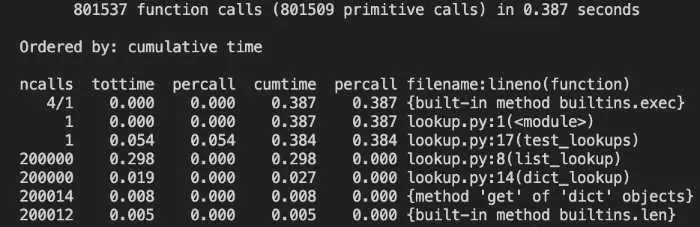
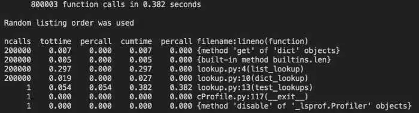
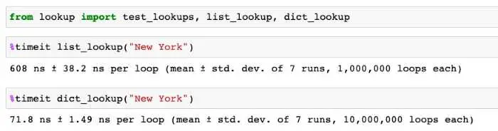
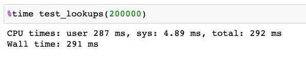
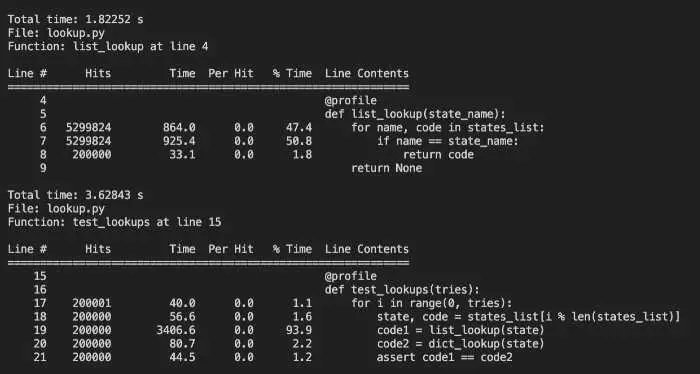
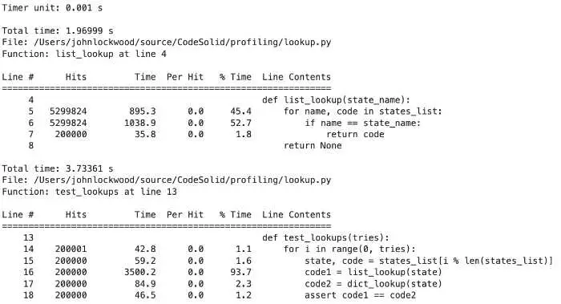
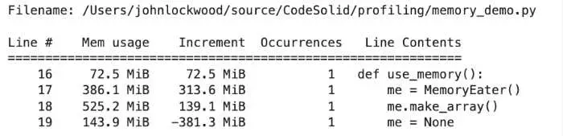
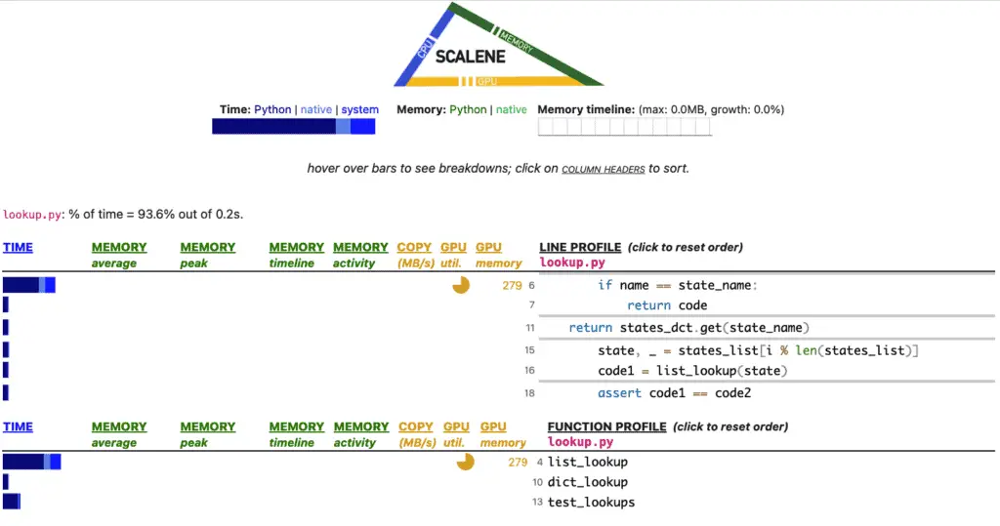
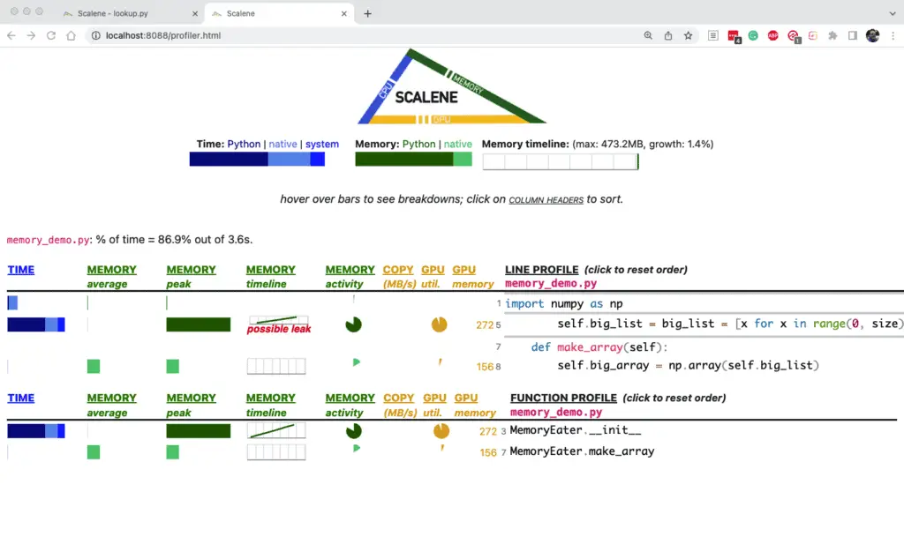
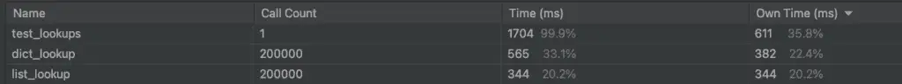

Python is a programming language that has gained massive popularity – but this popularity stems from its readability and ease of use rather than raw performance. Because of this, it can sometimes be even more critical to optimize for performance in Python than in other languages. Profiling is a tool that can help developers accomplish this.
Profiling is the process of running tools to understand where and how your program spends its time. Besides understanding which areas take too long to run, profiling can reveal how often each function is called (which may lead to some surprises, especially in an application of some complexity). It can also detail the program’s memory usage and help you understand whether the time is spent waiting or doing heavy processing.
In general, programmers use the cProfile module to profile their code since it’s part of Python’s standard library. For IPython and Jupyter, you can also install the IPython extensions line_profiler and memory_profiler. Finally, there are excellent third-party libraries such as Scalene and yappi.
This blog post will show examples of these different profiling methods. We’ll develop some easy-to-understand scenarios to cover the basics of profiling and the various tools. The idea is that once you have the tools, you’ll be able to apply them to other functions and Python programs you may need to profile.
We’ll begin with an overview of the tools we’ll be working with and some key profiling concepts. Next, we’ll develop a simple scenario to demonstrate how to profile, and we’ll use it to show some hands-on examples using cProfile. Most developers also explore how to benchmark code in Jupyter notebooks using the %time and %timeit functions and profile using the IPython extensions provided by the line_profiler and memory_profiler modules. Finally, we’ll look at two other very popular third-party modules, Scalene and Yappi.
Python Profiling Tool Overview
The following is a short overview of some of the tools we’ll be discussing here. For further information about a specific tool, please see the appropriate section.
cProfile - One of the most widely used profiling modules, cProfile is a C extension included in the Python standard library.
profile - This is another profiling tool included in the standard library. Since it’s API compatible with cProfile and is recommended only for particular use cases, we will not cover it separately.
timeit - More of a benchmarking tool than a tool for profiling (see the discussion below), timeit also comes with Python and measures the average execution time of a function or whole program. IPython includes two magic functions based on this module, %time and %timeit, for measuring a single statement or average execution time.
line_profiler - This is a third-party module available via “pip install.” Unlike cProfile, it also can help you understand the performance impact of system and runtime library calls in a single line of code. Provides magic methods that can be used with IPython / Jupyter.
memory_profiler - Another third-party module, memory_profile, allows you to visualize your program from the point of view of memory allocations and de-allocations. It also provides magic methods that can be used with IPython / Jupyter.
scalene - This open-source module opens a browser-based graphical viewer for profile data by default and shows the percentage of time spent in various parts of the code. It also profiles memory and CPU usage.
yappi - Yappi is another third-party module that focuses on providing support for understanding CPU vs. clock time (see below), to better profile multi-threaded code and code with heavy usage of the asyncio library, PyCharm Professional will use this profiler by default if it’s available.
Some Profiling Terms and Key Concepts
Profiling is a Late-Stage Activity
Python developers often say that profiling is a “late-stage” activity. In other words, you should only profile your code after you have written the code and tested it to ensure you have the correct behavior. This is not to say that you shouldn’t try to write your code efficiently and optimize it as you go along. The famous dictum that “premature optimization is the root of all evil” did not mean that you shouldn’t optimize at all, but rather that you shouldn’t optimize the wrong things – which you’re likely to do if you don’t know where the bottlenecks are.
Profiling happens late in the software development lifecycle because it may be challenging to understand where the bottlenecks will be in a complex program while the program is still in development. The whole point of profiling, after all, is to understand precisely where those bottlenecks are so you can optimize effectively. If you’ve profiled your program, there’s a good chance the optimization is not premature.
I’m not entirely convinced by this argument. As we’ll see below in our discussion of the %prun magic method, it’s entirely possible to integrate profiling into your regular programming workflow.
Profiling vs. Benchmarking
Profiling and benchmarking are two different ways of evaluating the performance of a program.
Benchmarking is running a program or set of programs multiple times and measuring how long it takes to complete each run of the entire program. This information can then be used to compare the performance of different implementations of the same code or other programming languages.
On the other hand, profiling is the process of analyzing a program to understand where it spends most of its time. You can then use this information to optimize the code to run faster.
In general, benchmarking is a more coarse-grained way of measuring performance, while profiling provides more detailed information.
Both benchmarking and profiling can be helpful when trying to improve the performance of a program. In general, though, profiling is more likely to be helpful in optimizing existing code, while benchmarking is more likely to be useful for comparing different implementations of the same code or other programming languages.
As the Python documentation points out, you need to be especially aware of this when measuring the difference between Python code and a corresponding method written in C or another language. This is because many tools we’ll discuss use deterministic profiling – they precisely measure the time spent in each function call, and as a result, they impact the program as they’re profiling. However, the functions in a C extension called by your Python code won’t be impacted in the same way, so code like this might be considered a candidate for benchmarking, not profiling.
Our focus here in this article is on profiling, not benchmarking, but we’ll also discuss the use of Python’s timeit module and the IPython %time and %timeit magic function. A little benchmarking never hurt anyone, except maybe the bench.
Deterministic Profiling vs. Statistical Profiling
The profilers included in the Python standard library do deterministic profiling. Deterministic profiling is trying to precisely measure the relative time for function calls, returns, and exception events. In contrast, statistical profiling samples code execution at various times and, on that basis, tries to deduce time spent in various functions. On balance, statistical profiling is less accurate, but it also impacts the code’s overall execution time less than deterministic profiling. For more information on this subject, see the deterministic profiling section of the standard library documentation.
Wall clock time vs. CPU Time
When measuring the performance of a program, you might want to consider two different types of time: wall clock time and CPU time.
Wall clock time is the amount of time that passes from when you start running a program to when it finishes. On the other hand, CPU time is the amount of time that the CPU spends executing your code.
Wall time and CPU time can be pretty similar in programs that do a lot of number crunching, analysis, or have recursive functions. Many data science tools manipulate data internally, so these likewise may give the CPU something to think about. Similarly, although perhaps it’s an exaggeration to say that mining cryptocurrency is a good way to fry an egg on your CPU, it is the sort of thing that uses the CPU/GPU quite extensively.
CPU and clock time can vary quite dramatically for other use cases. Web applications are a good example. Some function calls in a web application are like a trip to the DMV: they spend most of their time just waiting around. Any time you’re calling a backend database waiting for a result or making any other kind of API or service call will be time your program spends waiting, so you’ll see lower CPU time relative to clock time.
A Profiling Scenario
To have something simple to profile, let’s imagine you’ve recently moved to a new job. You’ve been busy filling out HR paperwork and getting familiar with the codebase.
After being there a few days, you notice that someone on your team has checked in some Python code that looks pretty inefficient. You come across a function that looks up a state code by looping through a list until it finds a match for the state name. The states_list looks like this:
states_list = [
("Alabama","AL"),
("Alaska","AK"),
# ... etc.
]
And here is the code that does the lookup:
def list_lookup(state_name):
for name, code in states_list:
if name == state_name:
return code
return None
You happen to know that when doing an in-memory lookup, looping through a list is far less efficient than simply accessing a dictionary entry. So you rewrite the code to be more efficient, as follows:
states_dct = {
"Alabama": "AL",
"Alaska": "AK",
# ... etc.
}
def dict_lookup(state_name):
return states_dct.get(state_name)
To prove that your code didn’t break anything, you write a function that will loop through some significant amount of times to make sure the values are correct:
def test_lookups(tries):
for i in range(0, tries):
state, _ = states_list[i % len(states_list)]
code1 = list_lookup(state)
code2 = dict_lookup(state)
assert code1 == code2
After staring at it for a minute, you realize that the value for tries only needs to be len(states_list) times to test all the cases, but you can bump the number up higher to figure out where the time is being spent in the list_lookup and dict_lookup calls. You know the performance increase will be huge, but you think it would look good on your resume to say, “Increased the performance of critical function calls by some big %.”
Admittedly, this is a contrived profiling scenario because generally, when you’re profiling your code, you don’t know where the slowdown is. In this case, we know the answer in advance. That said, let’s see how we might profile it to get familiar with that process, then we’ll see how we could have approached it using benchmarking instead.
Profiling using Python’s cProfile Module
The profile and cProfile modules are two of the most popular methods of profiling Python code. cProfile is written as a C extension and imposes less overhead on the Python application you are profiling than the profile module does. The Python docs recommend cProfile for most users who aren’t trying to extend the Python profiler somehow. Since profile and cProfile share a common interface, we’ll take cProfile as representative.
The cProfile module works in conjunction with the pstats module. The way these responsibilities break down is that the cProfile module is responsible for measuring the program’s execution time, and the pstats module is responsible for outputting these outputting profiling statistics and doing fundamental analysis and manipulation on them, such as sorting by the call count, or different measures of the time spent in the function.
To profile Python code using cProfile, you have two choices. You can create a simple Python script or use the command-line interface that cProfile provides. Even for the command line, you’ll still need to have a main method that runs what you need, and I’ve found that the output is more verbose than I like, but let’s quickly show this method and then move on to the more flexible way of writing a small Python program that uses cProfile to do the work.
Running the cProfile Python profiler at the command line
python -m cProfile -s ‘cumulative’ lookup.py
Given the test_lookups function we looked at earlier, we can write a simple file “main method” like this:
if __name__ == "__main__":
test_lookups(200000)
With that in place, assuming our code is in lookups.py, running the following command at the terminal will do what we want:
python -m cProfile -s 'cumulative' lookup.py
The output will be pretty long, but we’ve passed “-s ‘cumulative’” to sort the result by the (cumulative) time. The default is descending order, so the information we’re probably most interested in will be at the top.

Let’s first take a look at the headers:
ncalls tottime percall cumtime percall filename:lineno(function)
The Python documentation has a detailed breakdown of all of these, but here are the most important ones:
ncalls is the number of times a function was called. Our main method iterates 200,000 times, so you can see that we have a call count for both list_lookup and dict_lookup.
tottime is the total time spent only in that function, but it excludes calls to other functions. It is also called “internal time,” i.e., the time spent only internally in the current function.
cumtime represents the cumulative time spent in a function, which in this case includes time spent in other functions.
filename:lineno(function) is pretty much what it looks like, the file, line number, and function name for this row of data.
With this in mind, we can see that our test_lookups function took 384 milliseconds to run, and let’s see what took up most of that time.
These two lines tell the real story:
ncalls tottime percall cumtime percall filename:lineno(function)
...
200000 0.298 0.000. 0.298 0.000 lookup.py:8(list_lookup)
200000 0.019 0.000 0.027 0.000 lookup.py:14(dict_lookup)
We spent 298 milliseconds looking up state codes in list_lookup but only 27 milliseconds for the same lookups in dict_lookup. In other words, the list version was 11 times slower!
To be sure, this was a simple example where we knew in advance what we expected to find, but knowing where the time is spent in your program is often the first step in fixing a troublesome performance issue.
Running cProfile Python profiler in a short program
Running cProfile in a Python program results in a lot cleaner profiling data output than running cProfile from the terminal. One very convenient way to do this relies on the fact that cProfile’s Profile class can be used as a context manager – that is to say, you can use a “with” expression to manage the lifecycle of the Profile class.
The context manager implementation is convenient, as it saves you from having to start collecting profiling data with enable and stop collecting profiling data with disable.
Here’s a simple main method we can use to run cProfile from Python directly:
import lookup
import cProfile, pstats, io
from pstats import SortKey
if __name__ == "__main__":
with cProfile.Profile() as pr:
lookup.test_lookups(200000)
ps = pstats.Stats(pr).sort_stats(SortKey.CUMULATIVE)
ps.strip_dirs()
ps.print_stats()
Here is the entire output of the program in this case:

As you can see, the function calls we’re interested in comprise most of the seven output lines, rather than 108 (mostly uninteresting) lines of the terminal version. Other than that, the way we’ve set it up it’s nearly identical to the result, with the important stuff grouped at the top either way.
Benchmarking in Python using timeit
As we mentioned earlier, in the scenario above, we knew in a general way what the outcome would be, so another approach to this example would be to use benchmarking instead of profiling. The built-in timeit module could be used for this task.
As with cProfile, we can use the timeit module either as a program from the terminal or load the module programmatically. Let’s look at the running it as a command first:
Running Timeit as a Command
By default, it will try to run the command we give it several times, or we can specify a precise number. (Use ```python -m timeit –help``` to see all the options available).
The command to run is given as a string, and we can import the file that contains the function we’re benchmarking using an import statement in the setup string, which we can pass with -s. To get something of average performance, let’s take a state that’s more or less in the middle of the list, New York. Here’s how we can get the performance for dict_lookup:
python -m timeit -s "from lookup import dict_lookup" "dict_lookup('New York')"
Timeit will run the setup portion once and the statement itself many times.
Here we benchmark the dictionary against a list and show the output for a representative run:
$ python -m timeit -s "from lookup import dict_lookup" "dict_lookup('New York')"
5000000 loops, best of 5: 64.2 nsec per loop
$ python -m timeit -s "from lookup import list_lookup" "list_lookup('New York')"
500000 loops, best of 5: 573 nsec per loop
Using the Timeit Module in a Program
As with cProfile, we use the timeit module programmatically or from the terminal. For example:
"""Timeit example to benchmark the compare functions function"""
from timeit import timeit
result_long = timeit(stmt="list_lookup('New York')", setup="from lookup import list_lookup", number=200000)
result_short = timeit(stmt="dict_lookup('New York')", setup="from lookup import dict_lookup", number=200000)
print("Dictionary lookup was {:.2f} faster.".format(result_long / result_short))
Benchmarking in IPython and Jupyter Notebook: %time and %timeit
The two built-in magic methods you can use with Jupyter Notebook and IPython are both benchmarking functions.
The %timeit magic function is quite a handy tool for getting the average time it takes to run a given function. If the Python Python package is imported, it’s as simple as running %timeit and calling the function as you usually would. This is what the output will look like:

No surprises there.
You can also use the %time magic function to run a single function and get statistics for that run. Here again, the usage is straightforward.

Getting More Detail than cProfile: The line_profiler Project
The line_profiler module is available on PyPi.org so that you can install it with ```pip install line_profiler.```. What is meant by line profiling makes this module subtly different from cProfile. In the case of cProfile, the profiler focuses on function calls. It tends to miss lines that may be running inefficiently but still have no explicit function call in them, such as large array copies, list comprehensions, and the like.
Installing the line_profiler module also installs a Python profiling script, kernprof. This will provide excellent detail, but the downside of using kernprof is that you must instrument your code with an @profile decorator on the functions you want to profile. In addition to needing to modify your code, this also means that you already have to know something about where the bottlenecks are, either by moving @profile declarations down the call stack or perhaps by using cProfile or timeit in the early stages.
With @profile added to our test_lookups and list_lookup methods, we can run kernprof this way: kernprof -l lookup.py. Kernprof will then save a file, lookup.py.lprof, which can be examined with this command: python -m line_profiler -u .001 lookup.py.lprof. As you can see, we’re running the line_profiler module and passing it the name of the output file.
The -u switch is a float value for the type of seconds unit we want; we’re requesting milliseconds by setting it to .001.
This gives us the following output:

Kernprof does an excellent job of showing us line-by-line profiling, including lines that contain no function calls, but the combination of kernprof and line-profiler can be unwieldy to use.
If you’re using IPython or Jupyter, there’s a much more convenient method of using the line_profiler module, and we’ll discuss that next.
Line Profiling in Jupyter
With line_profiler installed, we can load the extension for it in either IPython or Jupyter notebook with the command %load_ext line_profiler. This will give us access to two very useful magic methods, %prun and %lprun. We’ll go over some examples of each of these, but you can get complete docstring information about these magic methods by running them in a cell and adding the usual IPython question mark for help: %lprun?
Profile Python Function Calls as You Go: Using the %prun magic method
I said earlier that profiling is usually a late-stage activity, but %prun is a welcome exception to this general rule. Like %time, you can use %prun to quickly understand the performance of short snippets of code. Suppose we want to understand whether constructing a large array containing a series of numbers is faster using NumPy’s arange method or a regular Python list comprehension. The %time magic method will do this for us, but %prun will also show us some of the “why” behind the numbers. Here we construct an array of 10 million numbers:
import numpy as np
count = 10_000_000
%prun x = np.arange(0, count)
The output shows some overhead for calling the function, but most of the time is spent in arange itself.
4 function calls in 0.039 seconds
Ordered by: internal time
ncalls tottime percall cumtime percall filename:lineno(function)
1 0.029 0.029 0.029 0.029 {built-in method numpy.arange}
1 0.010 0.010 0.038 0.038 <string>:1(<module>)
1 0.000 0.000 0.039 0.039 {built-in method builtins.exec}
1 0.000 0.000 0.000 0.000 {method 'disable' of '_lsprof.Profiler' objects}
Next, let’s look at the same sized array being created as a list comprehension and passed to NumPy:
import numpy as np
count = 10_000_000
%prun x = np.array([x for x in range(0, count)])
Output:
5 function calls in 0.718 seconds
Ordered by: internal time
ncalls tottime percall cumtime percall filename:lineno(function)
1 0.411 0.411 0.411 0.411 {built-in method numpy.array}
1 0.260 0.260 0.260 0.260 <string>:1(<listcomp>)
1 0.047 0.047 0.718 0.718 <string>:1(<module>)
1 0.000 0.000 0.718 0.718 {built-in method builtins.exec}
1 0.000 0.000 0.000 0.000 {method 'disable' of '_lsprof.Profiler' objects}
As we expected, the Python list comprehension version ran more slowly, but there’s also some interesting detail in this case. At 260 milliseconds, there’s some overhead for the Python list comprehension, but there’s even more overhead involved in converting the Python list to a NumPy array at 411 milliseconds. Beyond what’s usually involved in an array copy (already an expensive operation), there’s no doubt a type conversion from Python numbers to a NumPy data type (it gets converted to a numpy.n64).
Using %lprun: More Convenient than Kernprof
The other magic method doing a %load_ext line_profiler will make available to you is %lprun. We’ve already seen how getting significant detail from the line_profiler using kernprof requires us to annotate our code with @profile. %lprun gives us essentially the same output but lets us pass the functions we want to profile when we’re calling the function.
Here’s an example that echos what we did with kernprof, but much more conveniently:
from lookup import test_lookups, list_lookup, dict_lookup
%lprun -u .001 -f test_lookups -f list_lookup test_lookups(200000)
The output we get is the same:

Understanding Memory Usage with the memory_profiler Package
Our discussion has been largely concerned with Python profiling tools that measure the time spent in various parts of our code. Memory usage is another critical measurement we may need to consider as part of our optimization effort. No matter how fast our code might run otherwise, high memory usage will be a drag on performance.
Enter the memory_profiler module. Like line_profiler, memory_profiler allows you to annotate your code using @profile, but a more convenient approach is to use the available IPython magic commands from IPython or Jupyter. As with line_profiler, we have commands to quickly evaluate short snippets of code and others to profile multiple functions at once.
Memory Profiling for Single Lines of Python Code with %memit
Just as we could use %prun to profile a single line of Python code (which may resolve to multiple calls under the hood), the %memit magic function can be used to display an estimate of the memory consumed or freed by a single line of Python code. I stress that this is an estimate – as the module’s documentation points out, results are not 100% accurate due to the behavior of the garbage collector.
Once again, we developed a class to consume some memory to have a small amount of code to profile. Since this is for demonstration purposes, the methods are purposely somewhat asymmetrical between allocations and deallocations.
import numpy as np
class MemoryEater:
def __init__(self):
size = 10_000_000
self.big_list = big_list = [x for x in range(0, size)]
def make_array(self):
self.big_array = np.array(self.big_list)
def delete_array(self):
self.big_array = None
def delete_list(self):
self.big_list = None
def use_memory():
me = MemoryEater()
me.make_array()
me = None
if __name__ == "__main__":
use_memory()
We can import this code into Jupyter or IPython to see %memit in action:
import memory_demo as md
print("Constructing a MemoryEater, which will allocate a list")
%memit me = md.MemoryEater()
print("Making a NumPy array based on the list")
%memit me.make_array()
print("Freeing the memory")
%memit me = None
And the output:
Constructing a MemoryEater, which will allocate a list
peak memory: 892.92 MiB, increment: 306.36 MiB
Making a NumPy array based on the list
peak memory: 967.77 MiB, increment: 76.34 MiB
Freeing the memory
peak memory: 584.84 MiB, increment: -382.92 MiB
When dealing with the memory_profiler, peak memory is showing the memory used by the whole process, so in this Jupyter notebook example, it’s not especially interesting. In any case, it would at least include the Python interpreter overhead. The value that we most care about is the increment, which, as you can see, displayed our allocations and deallocations at least roughly as positive or negative increments. Again, however, note that freeing the whole class didn’t release the same amount of memory as it appeared we allocated along the way.
Memory Profiling Functions %mprun
In addition to profiling single lines of python calls, we can also profile more extended code runs consisting of one or more functions by using the memory_profiler module. In this case, the magic function that gets loaded is called %mprun.
The syntax for %mprun is very similar to line_profiler’s magic function, %lprun in that it takes one or more functions to profile (passed as -f options) followed by a function call to serve as an entry point.
One difference is worth noting, however. Unlike %lprun, the functions to be profiled in %mprun need to be imported from a file, not run interactively. It’s unclear why this limitation exists, as %memit it can be used on interactive code without a problem.
Other than that, %mprun is quite handy to use. Here’s a short example:
%load_ext memory_profiler
import memory_demo as md
%mprun -f md.use_memory md.use_memory()
Here’s the output in Jupyter Lab:

Profiling CPU and Memory Graphically With Scalene
Scalene offers a compelling package of features along with a web-based GUI. According to the project README, Scalene is “a high-performance CPU, GPU and memory profiler for Python that does a number of things that other Python profilers do not and cannot do. It runs orders of magnitude faster than other profilers while delivering far more detailed information.” I wasn’t able to validate the performance claim – to profile the profiler, so to speak – but I can attest that Scalene is easy to use and different enough from the other offerings we’ve discussed to be well worth investigating.
The first thing where Scalene stands out is that it does full-program profiling by default. This means you can skip the @profile annotations unless you only want to profile certain functions.
The next default that makes Scalene different than the other tools we’ve examined is that it features a web interface. Here’s how it displays the output of the lookup.py sample we’ve been using:

Looking at the time bar graphs toward the bottom, once again, we see that list_lookup is the big offender, and hovering over it informs us that it took up 47.3% of the time vs. only 6.1% for dict_lookup.
A handy feature here is that Scalene shows us the lines where most of the time is consumed at the top of the tabled, with the main culprit being the string compares in list_lookup (which are in effect running a nested loop).
Of course, this example is not very interesting regarding the memory used. You may recall in our memory_demo program that we created a large list in MemoryEater.__init__, then allocated and deallocated (set to None) a NumPy array based on that. In this case, Scalene is smart enough to flag the list we held onto as a possible leak.

Poking around in the source a bit, we were able to find two magic functions, %scrun and %scalene, available via:
%load_ext scalene
Unfortunately, I could not verify that these worked well (at least in Jupyter Notebook). Importing our test_lookups method displayed a result cell but did not show any line-by-line information that you could use to profile the function.
A Brief Honorable Mention: Yappi
I spent some time looking at yappi, the profiler that PyCharm will use by default if it’s available, but I found the results puzzling. For example, using Yappi in PyCharm, the profiler reported that dict_lookup actually took more time than list_lookup:

I’m not at all sure what to make of that weird result. I also tried yappi on some simple multi-threaded code (at which it’s documented to excel), but I couldn’t see any noticeable difference profiling it in Python vs. Yappi.
Closing Thoughts
If you’ve made it this far, you’ve learned a lot about different tools for profiling and benchmarking Python code.
Python is a programming language that has gained massive popularity – but this popularity stems from its readability and ease of use rather than raw performance. Because of this, it can sometimes be even more critical to optimize for performance in Python than in other languages. Profiling is a tool that can help developers accomplish this.